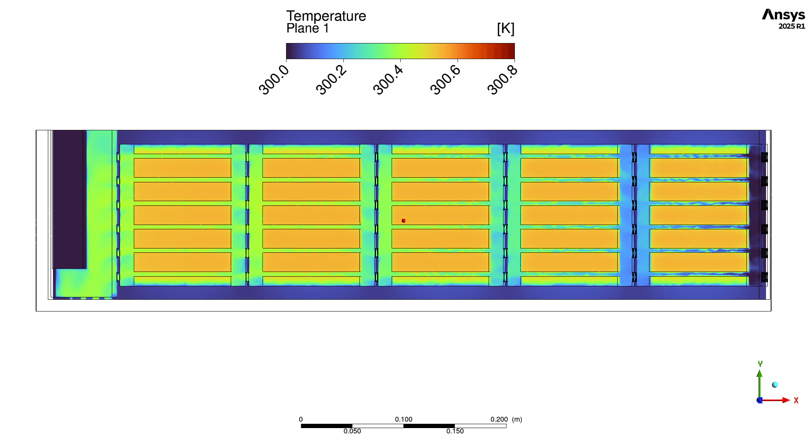
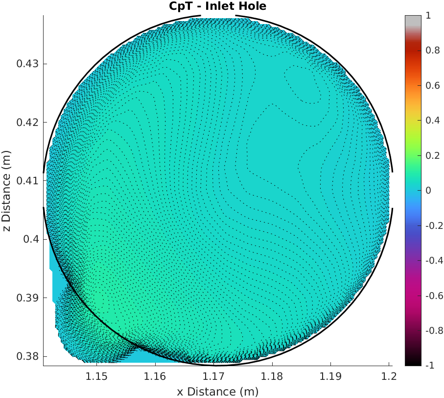
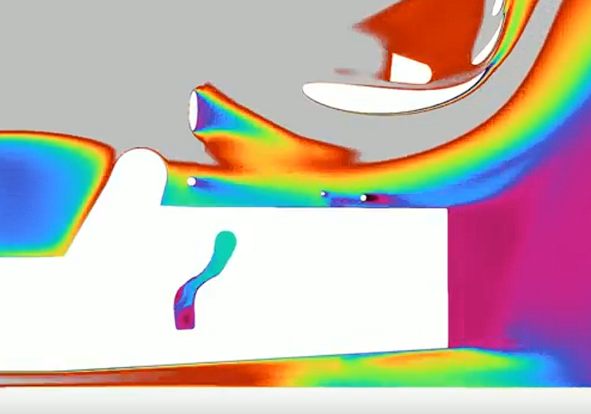
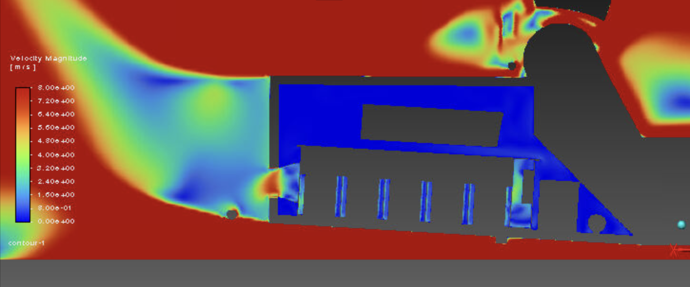
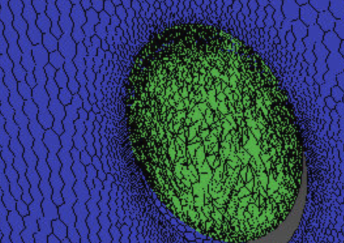
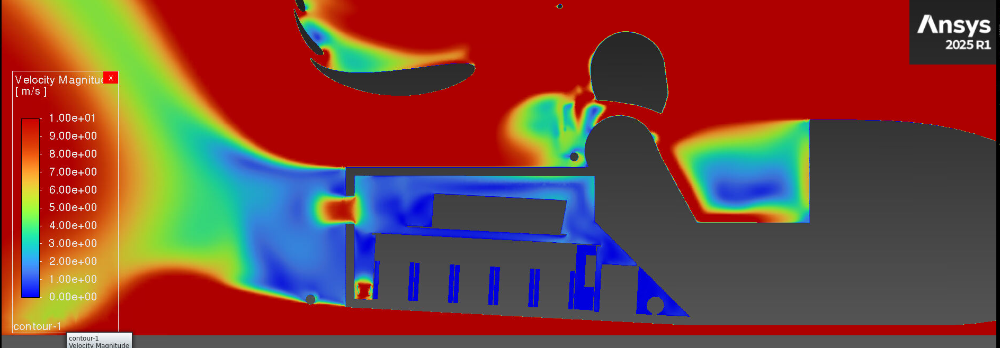

What didn't exist
To conduct Project 01 a workflow containing the fans, thermal simulation and accumulator ducting was required to run design iterations. The existing TUI workflow had none of it. Any cooling decision was therefore impossible to quantify, either thermally or in terms of its overall impact on the car. This project built that capability: an automated, integrated cooling CFD workflow able to quantify cooling decisions and support design iteration.
Defining the fan boundary condition
The fan boundary condition was an unknown region being explored for the first time, so understanding how Fluent handles it was the starting point. Testing on isolated block fan models established the requirement: for a fan boundary condition to be applied to a face, cells must exist both in front of and behind that face.
Simple in theory, difficult in practice. Once geometry is imported, our pipeline completes the surface mesh through a “wrap”, an arbitrarily large blanket laid over the geometry at a set drapeability index to define its edges. A material point placed somewhere in the domain then grows volume cells outwards, stopping when it reaches the wrapped surface. The problem this creates is that when growth reaches a solid such as a fan cylinder, no volume cells are defined behind the fan face, so the boundary condition cannot be applied.
Fix 1: The Infinitely Thin Face
The first attempt modelled the fan face as an infinitely thin circle. In theory this is exactly right: with no thickness, cells should propagate both in front of and behind the face, allowing the boundary condition to be placed on it. The theory held as cells were defined on both sides; but the same property that made it work was its downfall. The cells in front and behind overlapped and intersected one another. Tetrahedral initialisation failed, followed by a segmentation fault. A topological error, and not worth pursuing further.

Fix 2: Material Points Inside the Fan
The second attempt modelled the fan as a 3D solid, the obvious choice being a cylinder. By convention the face toward the front of the car is the fan face, and the rearward face the fan outlet. Since a material point grows volume cells outwards until it meets a wall defined by the wrap, defining an additional material point inside the fan cylinder should generate the cells needed to define the boundary condition. The process was to find the coordinate at the centre of the fan cylinder, let Fluent convert it through the applied vehicle attitudes, and define the material point there.
In initial trials some fans defined correctly and others did not. Comparing the coordinates Fluent recorded after the attitude definitions against hand-calculated values gave the deviations in Table 1, and several fans show significant discrepancies; the hypothesised reason the material points were not performing their function. Refining the mesh around the region and increasing the drapeability of the wrap were both tested, to no avail. This fix did not work.
| x | y | z | |
|---|---|---|---|
| Rad fan | 0.269 | 0.000 | −0.147 |
| Akku fan 1 | −2.236 | 0.100 | −0.236 |
| Akku fan 2 | −2.036 | 0.000 | −0.336 |
| Akku fan 3 | −2.136 | 0.000 | −0.336 |
| RBH fan | −9.918 | −0.300 | 0.075 |
<0.1 0.1–0.5 0.5–2 2–5 >5
From these deviations the most troubled section was the RBH fan an almost 10mm deviation in the x-direction. This error was incredibly difficult to diagnose, with the solution to leave it and find a different fix. While this wasn't the ideal path to follow due to the rigorous time constraint set to solve this issue, it was the only option to move forward with the project. The next fix was to step back and look at the problem from a different perspective.
Fix 3: Two Wraps
The third attempt stepped back from the problem. Rather than taking the CFD architecture as given and adding to it, I looked at adjusting the architecture itself: instead of one wrap over the geometry, use two. The first wrap includes all geometry as normal, defining the exterior of the fan cylinder. The second includes all geometry except the fans, which leaves their interiors open. When the volume mesh grows, the interior of each fan is now defined, and the boundary condition can be applied.
With this fix the fan boundary conditions could be defined, the solving sequence proceeded, and mass flow values and the overall impact of cooling design runs on car flow became quantifiable for the first time.
Applying the Fan Curve
In Fluent the fan boundary condition is defined through a fan curve defined as static pressure against volumetric airflow, describing how much air the fan can move at varying levels of resistance. As resistance rises, deliverable airflow falls.
During testing, setting the fans to their full operating point immediately diverged the solution. Staging the fans over the course of the run prevented the divergence without affecting the continuity of the solution.

Migrating to PyFluent
Mid-year the team began migrating the existing TUI workflow to PyFluent. Hosting it on GitHub gave version-controlled files that could be safely saved, reviewed and merged. PyFluent also allowed individual CAD imports with individually defined scoped sizing and BOIs, where previously a group import was done with general scoped sizing and BOIs applied across it. The change had no significant impact on the SLURM files beyond requiring a virtual environment to host the PyFluent modules.
My role was implementing the proven TUI cooling workflow into the PyFluent workflow being built. This allowed further mesh optimisation in specific regions, refining the accumulator while not over-refining regions that did not need it. Once merged, runtime fell by 54%.
I also added unit tests, tailored to the errors I had personally hit when making code changes and only discovering the problem late into a run, losing all progress. 22 tests run in around 0.40 seconds and catch those failures before a case is submitted.
Post-processing
All of this is useless without being able to visualise and quantify the impact of a design run. The existing pipeline included a working ParaView model generating video contour sweeps for CpT and other parameters. CpT is the coefficient of total pressure which is a measure of the energy in the air, the sum of dynamic and static pressure, or the kinetic and potential energies respectively. It is what you manipulate to guide duct flow and generate downforce. I adapted the script to produce sweeps including the hollowed monocoque and the ducting system, which the cooling design runs depended on.
Two regions needed closer inspection than a full-car sweep gives: the entrance to the monocoque and the entrance to the accumulator. The monocoque inlet flow follows directly from the external duct geometry and sets a ceiling on what can enter the accumulator. The accumulator inlet is the last look at the air before it begins cooling the cells. The aim was to maximise monocoque inlet flow and minimise losses between the two, keeping the contours as similar as possible.
To do this I defined planes in Fluent via attitude-transformed CAD coordinates, exporting key parameters to CSV. A MATLAB script then filters the data, orders it by coordinate, and maps it onto a contour plot with a fixed colour map so cases are directly comparable. The parameters of interest were velocity and CpT. The same planes provide the mass flow and uniformity values used throughout Project 01. This script proved vital during design runs, allowing duct performance to be compared at a local scale rather than the whole-car scale the ParaView sweeps give.
Scope: the PyFluent migration was a team effort, with my contribution the cooling sections and the integration of the existing TUI cooling workflow. The fan boundary condition work, the cooling architecture, the unit tests and the MATLAB post-processing are my own.